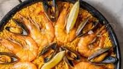

Paella

Description
There is no dish more famous than this Spanish seafood paella recipe. Read on to discover how to make the
perfect
paella for seafood lovers. It’s easier than you may think!
Ingredients
- Shrimp, mussels, squid, rice, stock, onion, garlic, olive oil, saffron, paprika, tomato, lemon, and white
wine.
Steps
- Start by heating the seafood stock and white wine along with a pinch of saffron in a pot. Keep this warm
(the saffron will infuse into the broth) until you need it later on. Then add olive oil to your pan and
start making your sofrito by first sautéing the diced onion (until translucent) and then adding the minced
garlic and sautéing for a few more minutes.
- Next you’ll add the diced tomatoes and the paprika, and a pinch of salt. If you are using a salty seafood
stock you may want to omit the salt here. Keep stirring and cooking the mixture down. The secret to a good
sofrito is a bit of time. You want it to become jam-like in texture.
- Next you add your squid (calamari) which can be cut into rings or chunks, depending on preference. Coat in
the sofrito and sauté for one minute.
- Now we add the rice! There are different opinions on the best method here, but I add my rice and then stir
to coat and “fry” it a bit. Now we’ll add the broth…
- Now you add the broth mixture to the pan — and don’t stir! This is key, once the broth is in no stirring
allowed! Simmer on low for 10 minutes. Then add the shrimp or prawns on top for the final 10 minutes. If
needed, flip the shrimp after five minutes to make sure the cook fully on both sides. They’ll be nice and
pink when finished.
- In the meantime, steam the mussels in a pot by simmering a little water or wine and adding the closed
mussels and covering. After a few minutes, you’ll see that the mussels have opened. If any stay shut, simply
discard.
- Place the cooked mussels on the paella in a decorative way. When the rice has been cooking for 18-20 minutes
in total it should be done. I like to turn off the heat and place a dish towel on top for about three
minutes. Serve with sliced lemon wedges.